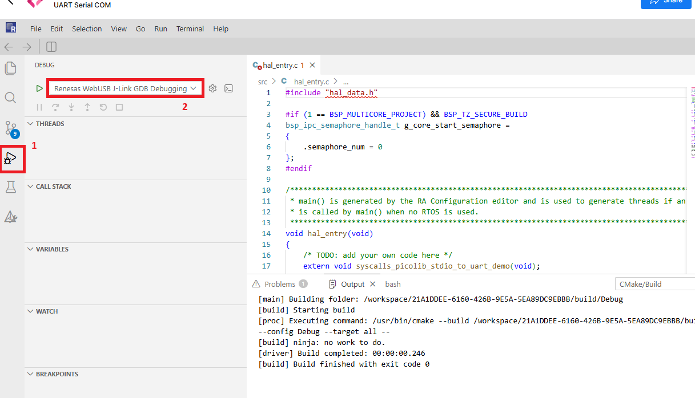
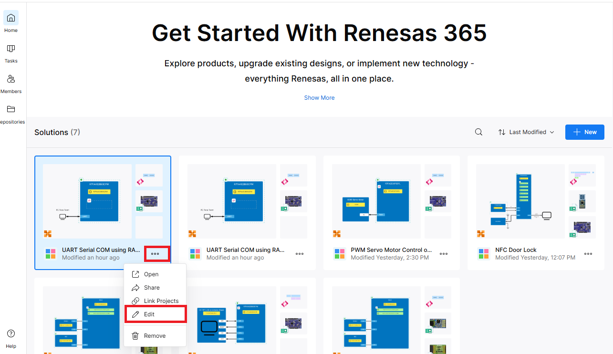
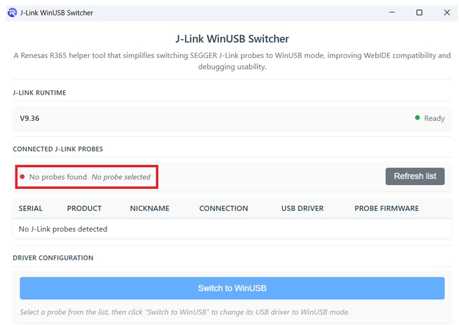
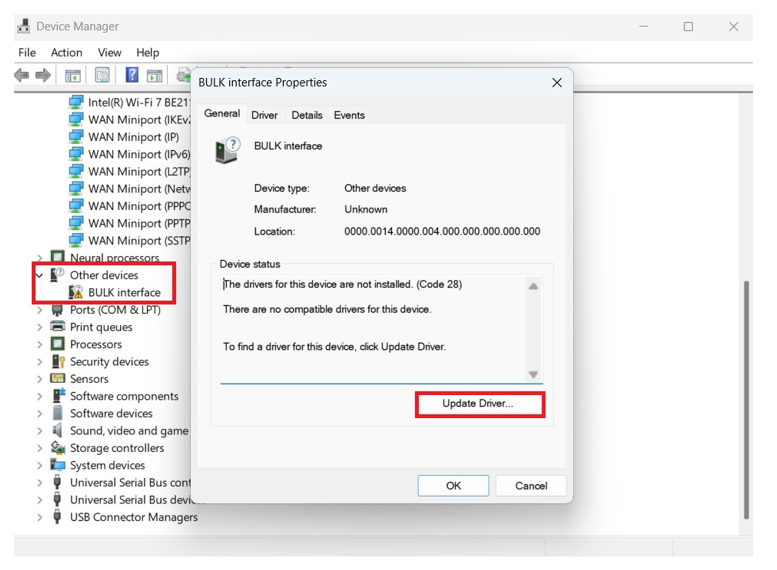
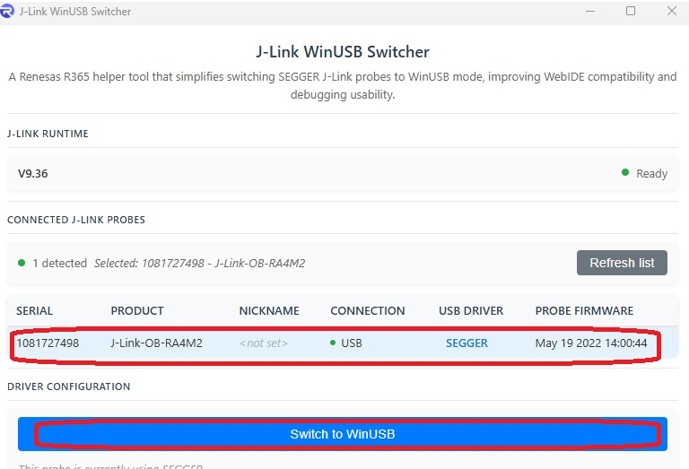
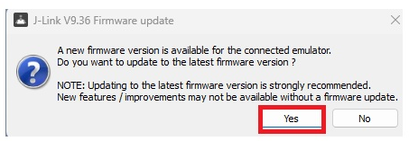

Xplore Software Building Blocks & Applications
Software Building Blocks (SBBs) are application-focused modules derived from real-world embedded use cases and optimized for Renesas hardware and peripherals.
The SBBs include reference application examples which can be accessed from the Xplore landing page.
Xplore Quick Start Guide
Use this guide to open an Xplore project in Renesas 365, build and debug it, save a modified solution, and troubleshoot common debug or flashing errors.
Target Devices
Contents
1. Navigation to R365 Project
- Select either Software BB or Solution Hub from the Xplore landing page to choose an application based on a Software Building Block or a hands-on solution.

Figure 1. Software Building Blocks in Xplore Hub
- Select Experience Now.

Figure 2. Xplore Landing Page
- Click the Software block to open the Web IDE.

Figure 3. Opening the Web IDE
2. Building and Debugging the Project
- When the IDE is ready, build the project by clicking Build.

Figure 4. Building the Project
- When the build is complete, select the Debug view and choose Renesas WebUSB J-Link GDB Debugging. Click the green arrow to connect to J-Link.

Figure 5. Debugging
- Click the green arrow to connect to the board and start debugging.

Figure 6. Connecting to the Board
- Once flashing is complete, click the blue Continue icon to run the project on the board.

Figure 7. Running the Project
3. Modifying and Saving the Project
- Make changes to the files, then build, flash, and run the project as described in Section 2.
- The modified project can be renamed and its properties edited through Renesas 365.

Figure 8. R365 New Solution View
4. Troubleshooting Debug and Flashing Errors
4.1 “gdbserver” Error
- If a gdbserver error appears, follow Section 1.1.1 of Debugging a Project - Renesas VS Code Web Extensions to switch the USB driver to WinUSB mode, or use the steps below.

Figure 9. gdbserver Error
- Download and install J-Link WinUSB Lite using the appropriate installer listed in the source Quick Start Guide.
- If the switcher reports No probes found, continue with the driver steps below.

Figure 10. J-Link WinUSB Switcher - No Probes Found
- Download and install the J-Link Software and Documentation Pack from the SEGGER website.
- Open Device Manager and locate the USB device under Other devices.
- Navigate to
C:\Program Files\SEGGER\JLink\USBDriver\and runInstDrivers.exe.
Figure 11. Updating the Driver
- Select the probe in J-Link WinUSB Switcher and click Switch to WinUSB.

Figure 12. Switching to WinUSB
- Click Yes to confirm the driver update.

Figure 13. Driver Update Confirmation
- The board is now ready for flashing and debugging.